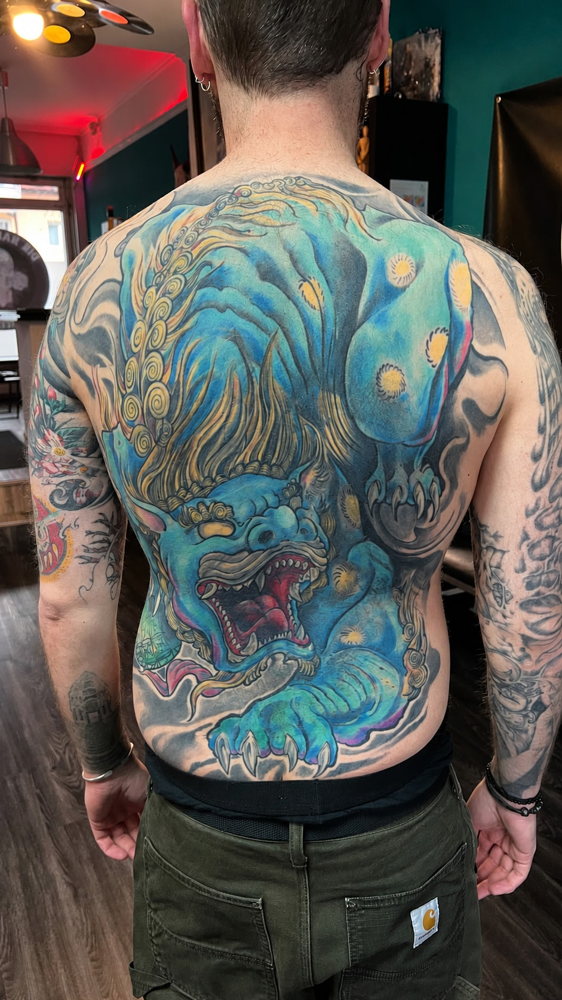
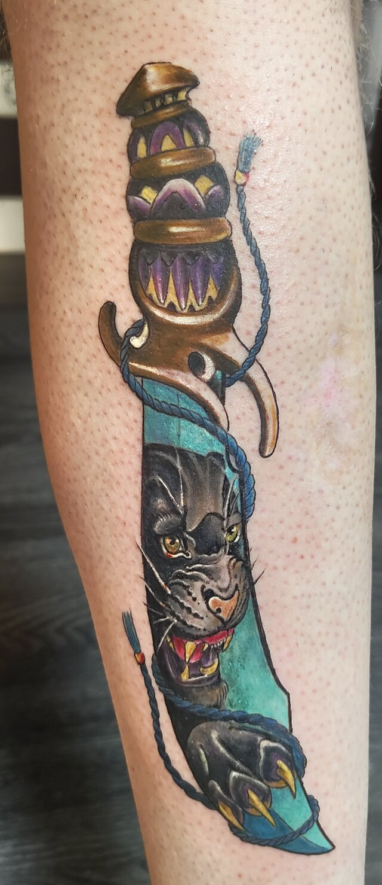
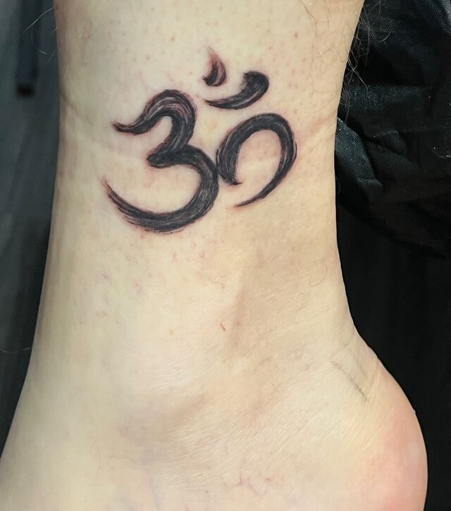

Ottobrunn Bahnhof
Hautmaler
Lass dich stechen. Wir hacken dir was rein, oder wir malen dir was auf die Haut – Realistic, Fine Line, Blackwork, Cover-ups.
Aus dem Studio
Die Arbeiten.
Ausschnitt aus fertig abgeheilten und frischen Motiven – mehr auf Instagram.
-

Color Realism · Backpiece -

Realistic · Color Realism -

Realistic · Ornamental -

Fine Line · Lettering -

Realistic · Lettering -

Realistic · Fine Line -

Realistic -

Fine Line -

Blackwork -

Realistic · Color Realism -

Calligraphy
Was wir stechen
- Realistic & Color RealismPortraits, Tiere, Motive mit Tiefe und sauberer Schattierung – unser Schwerpunkt.
- Fine Line & LetteringFeine Linien, Ornamente und Schriftzüge.
- Blackwork & OrnamentalKräftige Flächen und klare Kontraste, auch für große Motive.
- Cover-ups & ReworkAltes Tattoo passt nicht mehr? Wir entwerfen was Neues darüber.
Qualität & Sicherheit
- Einweg-NadelnSterile Verfahren bei jedem Termin.
- Ausführliche BeratungVor jedem Termin, ohne Zusatzkosten.
- Eigenes DesignKeine Vorlage, jedes Motiv neu gezeichnet.
- PflegehinweiseKlare Anleitung für die Nachsorge.

Wer sticht
Der Typ.
Phil ist seit 15 Jahren im Geschäft, Die Hautmaler gibt's seit 10 Jahren in Ottobrunn bei München. Für die meisten zwischen Ottobrunn, Neubiberg und Waldperlach ist er längst Kult – eine echte Institution. Bis heute macht er alles selbst: von der ersten Nachricht bis zum fertigen Tattoo.
Schwerpunkt ist Realistic und Color Realism: Portraits, Tiere und Motive mit Tiefe und sauberer Schattierung. Cover-ups und Schriftzüge werden genauso gemacht – immer neu gezeichnet für die Stelle, an der es sitzen soll.
Mentalität: keine Allüren. Musik muss laufen, Raucherpause ist Pflicht – Hygiene steht trotzdem über allem.
Anfahrt
Der Laden.
Ottostraße 86a, 85521 Ottobrunn – direkt am Ottobrunn Bahnhof.

Beim Laden der Karte wird eine Verbindung zu Google hergestellt. Route direkt bei Google Maps planen ↗
So läuft's
Von der Idee zum Tattoo.
Termine: Di–Fr 11–19 Uhr, Sa nach Absprache. Kurzfristig geht meistens auch.
Du meldest dich
Mail, Insta oder WhatsApp – am besten gleich mit Idee, Stelle und ein paar Referenzbildern.
Beratung im Studio
Wir klären Motiv, Größe und Platzierung und machen einen Termin aus.
Dein Tattoo entsteht
In Ruhe, in deinem Tempo. Am Ende gibt's klare Pflegehinweise.
Kurz schreiben
Was solls werden?
Schreib uns deine Idee, gewünschte Stelle und, wenn vorhanden, ein paar Referenzbilder. Wir melden uns wegen einem Termin.
- Adresse Ottostraße 86a, 85521 Ottobrunn
- Telefon 0176 74135642 (auch WhatsApp)
- Zeiten Di–Fr 11–19 Uhr · Sa nach Vereinbarung